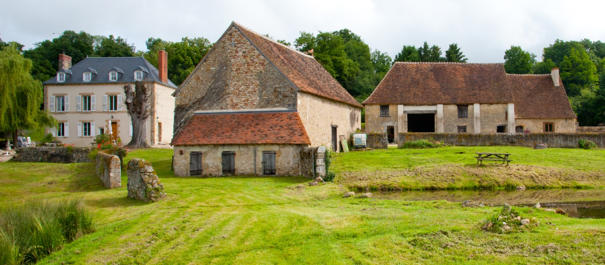
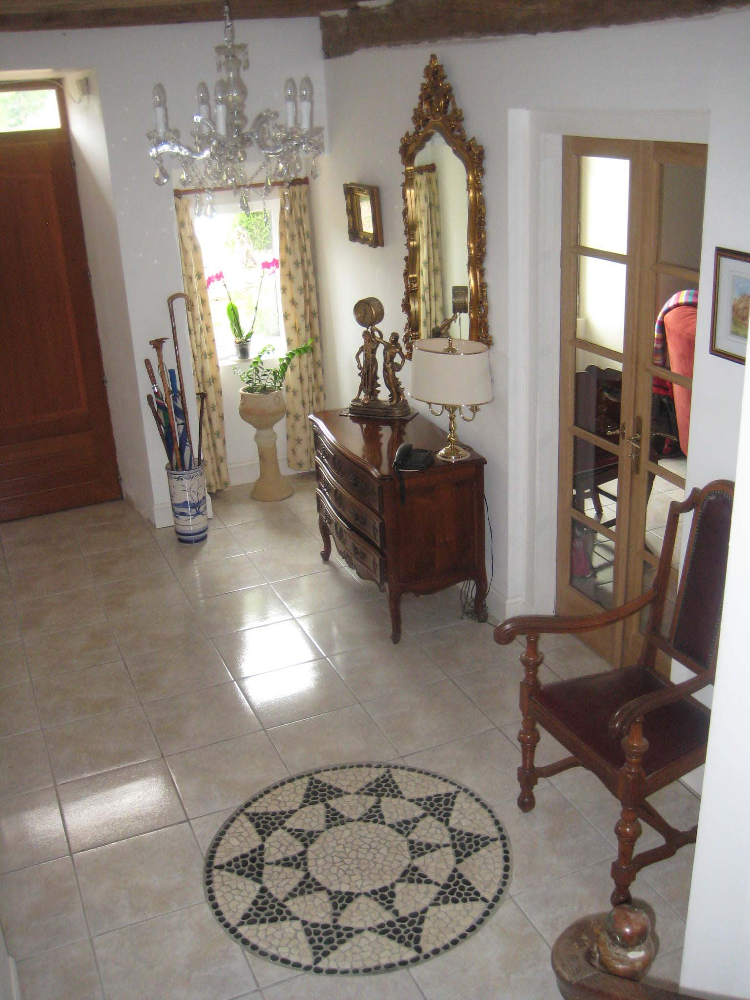
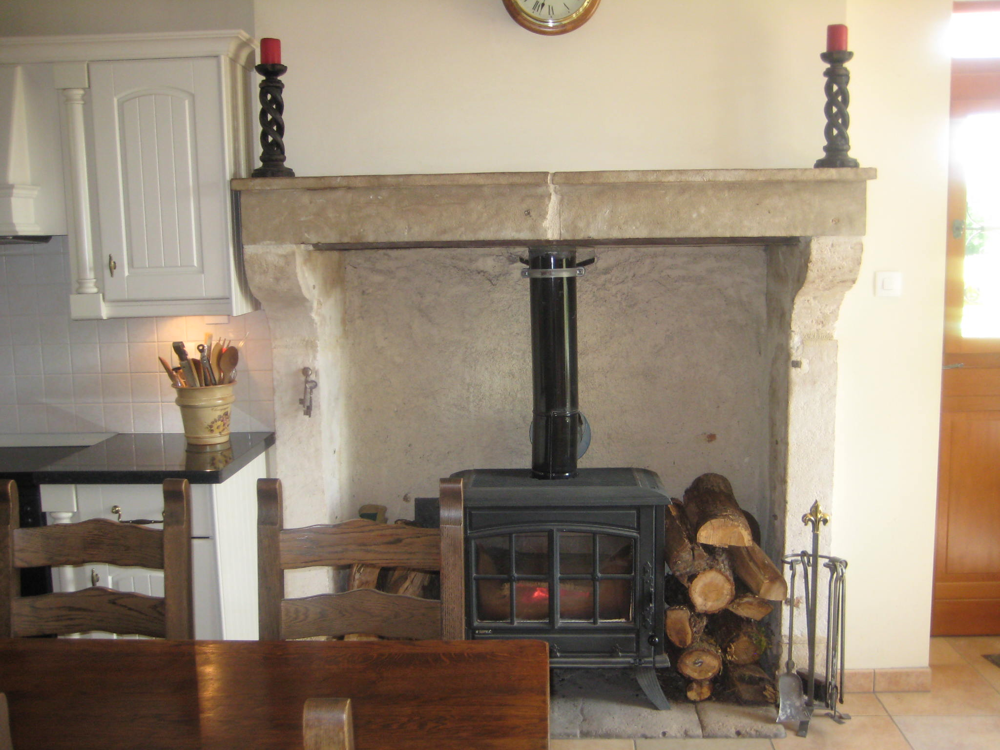
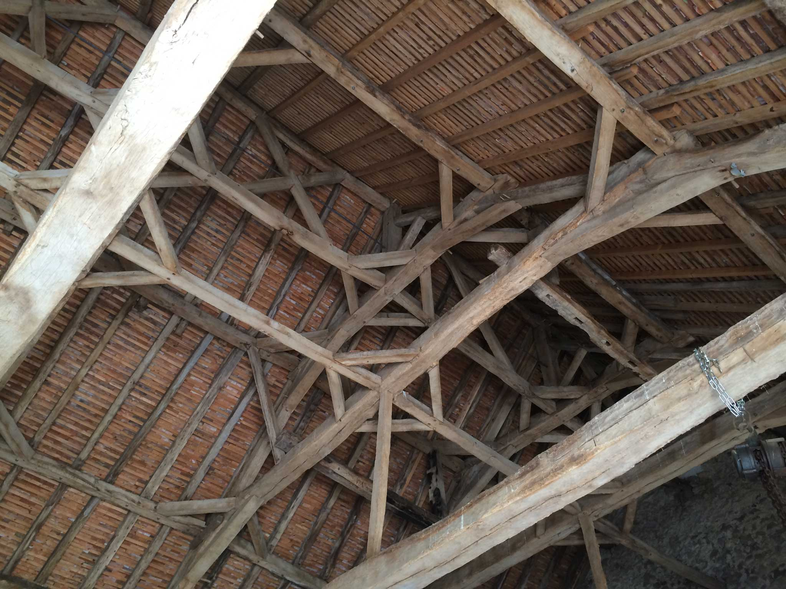
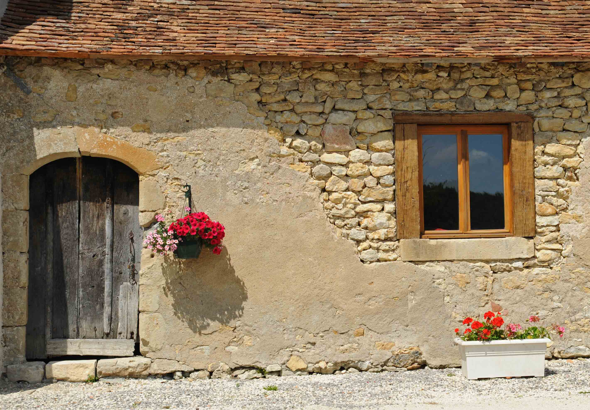
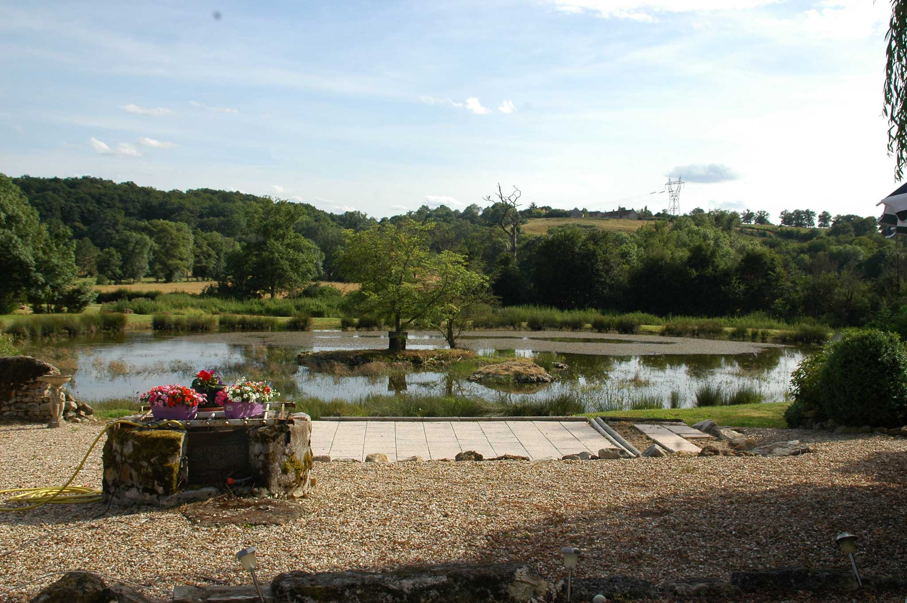

Chapter I
The House
A maison de maître at the foot of the limestone cliff of Prissac, built from the stones of a far older castle.
Fontmorand is a small hamlet in the Val de l'Abloux, half an hour south of Châteauroux and an hour north of Limoges. The house we came to own stands where Château Fontmorand once stood - an 11th-century castle with a moat and drawbridge, sold to the French Nation in 1792 by the Marquis de Villemort. By 1850 little of it remained but a few walls and the north-western tower, and the present house was raised from its stones. From the front rooms you looked straight down the Prairie de Fontmorand, and the view had not much changed in two hundred years.

Three storeys, slowly won back
The house gave us 290 square metres over three floors. A large entrance hall led through to a country kitchen and to the living and dining rooms, each with its period fireplace; two wood-burning stoves kept the winters affordable. An oak spiral staircase wound up to four double bedrooms on the first floor - one with its own dressing room - and on the second floor were two more bedrooms, one of which we lined with books and called the library, with a third nearly finished when we left. The beams overhead were 16th-century oak, salvaged - like so much of the house - from the old château.


Barns, cottage, lakes and paddock
Around the house lay 3.5 hectares - nine acres - of parkland: two lakes, an acre of woodland, two acres of paddock, and a 300-square-metre terrace above the water where most of our summer entertaining happened. Two 16th-century barns, of 156 and 120 square metres, had been re-roofed in the traditional style, their lattice-work a small marvel when you stood beneath it. By the gate stood the gatekeeper's cottage, 96 square metres of future project that we always meant to get to.



Prissac village was close enough for bread - shops, a restaurant, a café-bar - and the wider practicalities were nearer than visitors expected: St Benoît-du-Sault six miles away for banking and markets, the hospital at Le Blanc within half an hour, and mainline trains at Argenton-sur-Creuse. But those are details for Chapter IV. The point of Fontmorand was never convenience; it was the stillness.